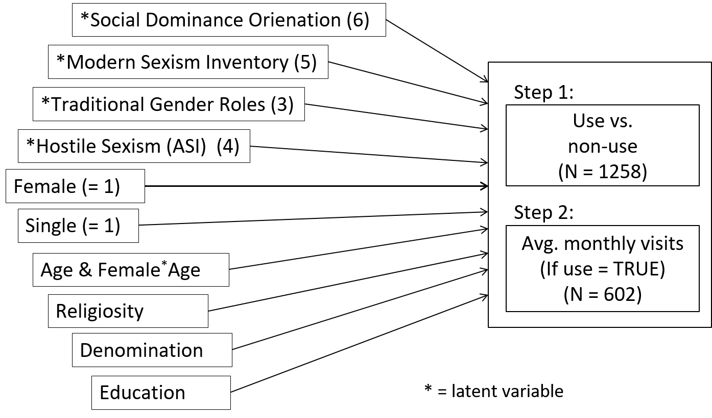
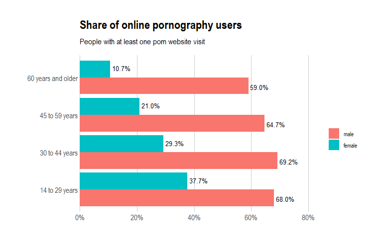

Even when including attitudes, personality traits, and other sociodemographics, sex is by far the strongest predictor of online pornography use. Age differences vary between men and women.
Desires vs. desirability:
Studying predictors of online pornography use in Germany with a combination of surveys and web tracking
Studying predictors of online pornography use in Germany with a combination of surveys and web tracking
Johannes Breuer 1, 2, 
@MattEagle09
johannes.breuer@gesis.org
Maximilian T.P. von Andrian-Werburg3,
Pascal Siegers1,
1 GESIS - Leibniz Institute for the Social Sciences
2 Center for Advanced Internet Studies (CAIS)
3 University of Würzburg
Introduction
While pornography has been studied much less compared to other types of media/content (Grubbs & Kraus, 2021), quite a few studies have looked at antecedents and differences in its use (Grubbs et al., 2019). These studies have, e.g., found that (young) men are the heaviest users of pornography, and that religious men tend to consume more pornography than nonreligious men, whereas religious women seem to only very rarely consume it (Short et al., 2015). While these findings are in line with commonly held assumptions, others are more counterintuitive. For example, a study by Kohut et al. (2016) has shown that frequent porn users show more gender-egalitarian attitudes. Notably, the robustness of most previous findings can be questioned to a certain degree as these are based on self-report data, which are very prone to social desirability bias in pornography research (Regnerus et al., 2016). Hence, the use of tracking data has been suggested as a promising methodological approach (Grubbs & Kraus, 2021).
Research Questions
RQ 1: Is the sex gap in online pornography use known from self-report studies also visible in web tracking data?
RQ 2: Can the sex gap in online pornography use be explained by different attitudes regarding gender roles, different religious profiles, or other differences in sociodemographic attributes?
Methods
Our data come from a (non-probability) web tracking panel with ~ 2,000 participants per month, spanning the period from June 2018 to May 2019. Participants used software that tracks their website visits on the domain level (e.g., youporn.com). We combined these web tracking data with survey data. N = 1,323 of the panelists (48.15% female, mean age = 45.21) completed an online questionnaire in which we asked for basic sociodemographics and a set of attitudes and personality traits, including sexism, gender role attitudes, religiosity, and social dominance orientation.

Results


Use vs. non-use

Frequency of use

Discussion
Our study illustrates that web tracking data are a promising tool for studying online pornography use. They allow for more fine-grained analyses of usage patterns and avoid the issues associated with sensitive questions in surveys. On the substantive side, our finding that sex, age, and religiosity were the strongest predictors of online pornography use confirm results from earlier survey studies (Martyniuk & Dekker, 2018; Price et al., 2016). Notably, while using web tracking data in combination with survey data provides a number of advantages compared to only using self-report data, our study had a number of limitations that need to be considered when interpreting its results. The data come from a non-probability sample in which users opt in to having their internet use tracked. This sample is, of course, not representative for the German population (or even the population of German internet users). In addition, participants were able to pause the tracking, and the tracking data are only on the domain level, meaning that we cannot really distinguish between different types of pornographic content.
References
Grubbs, J. B., & Kraus, S. W. (2021). Pornography Use and Psychological Science: A Call for Consideration. Current Directions in Psychological Science, 30(1), 68–75. https://doi.org/10.1177/0963721420979594
Grubbs, J. B., Wright, P. J., Braden, A. L., Wilt, J. A., & Kraus, S. W. (2019). Internet pornography use and sexual motivation: A systematic review and integration. Annals of the International Communication Association, 43(2), 117–155. https://doi.org/10.1080/23808985.2019.1584045
Kohut, T., Baer, J. L., & Watts, B. (2016). Is Pornography Really about “Making Hate to Women?” Pornography Users Hold More Gender Egalitarian Attitudes Than Nonusers in a Representative American Sample. The Journal of Sex Research, 53(1), 1–11. https://doi.org/10.1080/00224499.2015.1023427
Martyniuk, U., & Dekker, A. (2018). Pornografienutzung von Erwachsenen in Deutschland: Ergebnisse einer Pilotstudie. Zeitschrift für Sexualforschung, 31(03), 237–249. https://doi.org/10.1055/a-0664-4441
Price, J., Patterson, R., Regnerus, M., & Walley, J. (2016). How Much More XXX is Generation X Consuming? Evidence of Changing Attitudes and Behaviors Related to Pornography Since 1973. The Journal of Sex Research, 53(1), 12–20. https://doi.org/10.1080/00224499.2014.1003773
Regnerus, M., Gordon, D., & Price, J. (2016). Documenting Pornography Use in America: A Comparative Analysis of Methodological Approaches. The Journal of Sex Research, 53(7), 873–881. https://doi.org/10.1080/00224499.2015.1096886
Short, M. B., Kasper, T. E., & Wetterneck, C. T. (2015). The Relationship Between Religiosity and Internet Pornography Use. Journal of Religion and Health, 54(2), 571–583. https://doi.org/10.1007/s10943-014-9849-8